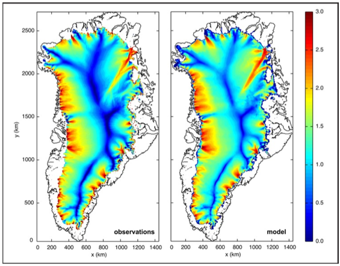

CISM Introduction
The Community Ice Sheet Model (CISM) is a next-generation ice sheet model used for predicting ice sheet evolution and sea level rise in a changing climate. This model is freely available to the glaciology and climate modeling communities. It serves as the ice dynamics component of the Community Earth System Model (CESM), which is one of the first global climate models to include coupled, dynamic ice sheets.
The starting point for CISM is the Glimmer ice sheet model developed at the University of Bristol and elsewhere. CISM has been extended to include higher-order dynamical cores ("dycores") developed by two U.S. Department of Energy projects, the Ice Sheet Initiative for Climate Extremes (ISICLES) and Predicting Ice Sheet and Climate Evolution at Extreme Scales (PISCEES). The new dycores have contributed to two major sea-level assessments, Ice2sea and SeaRISE.
Development of CISM has taken place through the CESM Land Ice Working Group and led by the Climate, Ocean, Sea-ice and Ice-sheet Modeling (COSIM) project of Los Alamos National Laboratory, with contributions from other Department of Energy laboratories, including Oak Ridge National Laboratory, Sandia National Laboratories, Lawrence Berkeley National Laboratory, and the National Center for Atmospheric Research, as well as from universities including the University of Montana, the University of Colorado, New York University, the University of Bristol, the University of Edinburgh, Swansea University, and the University of Zurich. Recent funding for CISM development has primarily been through the U.S. Department of Energy's Office of Science Biological and Environmental Research (BER) and Advanced Scientific Computing Research (ASCR) programs.
CISM Features
The original Glimmer model calculates mass, momentum, and energy conservation for ice sheets and glaciers using a serial, thermomechanically-coupled, shallow-ice representation of ice dynamics. CISM extends the Glimmer model by adding higher-order approximations of the momentum balance (velocity solver), scalable parallelism, advanced third-party-solver library support, and additional physics.
CISM runs on a regular mesh using a mixture of finite-difference, finite-volume, and finite-element methods and is written in Fortran 90. CISM is open-source software licensed under the GNU Lesser General Public License (LGPL).
CISM can be run on Mac or Linux laptops or desktops using a single or multiple processors or on supercomputing clusters with access to thousands of processor cores. It has been successfully run for realistic Greenland and Antarctic ice sheet simulations, at horizontal resolutions up to ~1 km, using several thousand processors. CISM 2.0 is the first supported public release of the higher-order code.
CISM 2.0 includes the following new features relative to the Glimmer 1.x model:
- Addition of robust, parallel, 2D and 3D, higher-order accurate approximations to the Stokes momentum balance (Blatter-Pattyn, L1L2, and SSA)
- Addition of 3D, parallel mass and temperature transport
- Addition of software interfaces to modern C++ based solver libraries (e.g., Trilinos)
- Replacement of Autotools build system with Cmake build system
- Addition of new test cases for higher-order models, including several with analytical solutions
- Re-ordering of time step to be fully consistent with explicit forward Euler scheme
- Addition of a new high-level "cism_driver", which replaces and reproduces functionality of several old drivers and allows for more flexible integration of additional and/or external dycores
- Re-arrangement of directory structure
- Modifications to GLINT coupling software to support coupling to CESM and other climate models that compute the surface mass balance external to the ice sheet model
- New and updated documentation
 Observation-based balance velocities for Greenland (left) and depth-averaged speed from higher-order CISM (right) with basal sliding coefficients optimized to match the balance velocities (after Price et al., PNAS, 108(22), 2011).